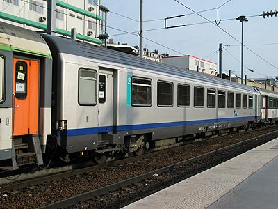

Corail TER - phase II
La standardisation des Corail TER
Les automoteurs TER de nouvelle génération X 72500 reçoivent une livrée gris métallisée et bleue décorée d'un sigle TER blanc sur toute la hauteur de la caisse qui devient le nouveau standard pour le matériel régional. Les Corail rénovées à la fin des années 1990 reçoivent cette décoration. Dès 2002, elle est légèrement simplifiée avec l'abandon du grand sigle contre des stickers beaucoup plus petits apposés sur les flancs des voitures.
Première vague : 1997-2000
Si Alsace et Rhône Alpes sont les pionnières dans la régionalisation des Corail, elles sont suivies dès 1997 par Languedoc-Roussillon, Centre, Picardie, Bourgogne et Midi-Pyrénées.
Languedoc-Roussillon
VU B6Du n°50 87 82-77 052-5 Languedoc-Roussillon (Marseille, 17/07/2005)
Centre
VTU A5B4tux TER Centre n°39-77 110-5 (Trappes, 28/01/2006)
Picardie

B11tu n°50 87 21-77 725-0 TER Picardie
(Paris Nord, 24/04/2003)
VTU B6Dux TER Picardie effectue une sortie hebdomadaire sans caténaire
ni réver au Tréport (14/05/2006)
Midi-Pyrénées
B3t7u TER Midi-Pyrénées ex-B12u Cabine 8 (Toulouse, 13/07/2003)
VTU A5B4tuh Midi-Pyrénées (Limoges, 25/09/2011)
Seconde vague : 2002-2005
A partir de 2002, elles sont rejointes par Franche-Comté, Aquitaine, Champagne-Ardennes, Lorraine et PACA qui appliquent une livrée simplifiée sans le grand logo TER à leur voitures.
Enfin, les régions Auvergne, Bretagne et Poitou-Charentes ont utilisé quelques temps des Corail sans leur apporter de modification et s'en sont assez rapidement séparées.
Lorraine
B3t7u TER Lorraine ex-B12u Cabine 8 (Nancy, 04/04/2007)
Champagne-Ardennes

B11u TER Champagne Ardennes (Reims, 04/06/2004)
Provence-Alpes-Côte d'Azur
VU A10u n°50 87 10-77 600-8 PACA (Marseille, 16/07/2005)
Pour plus d'info :
Les Corail TER sur Trains-Europe.